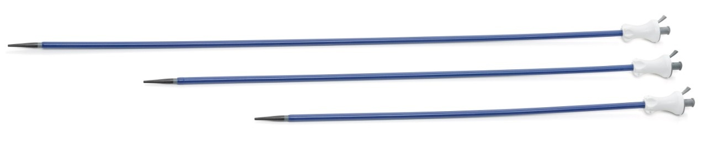
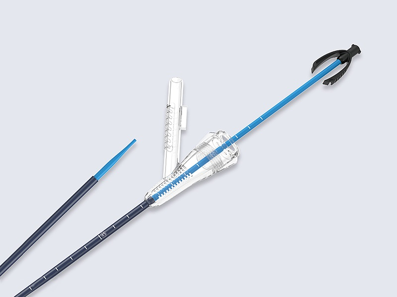

Fleksible URS'ler için geliştirilmiş Fleksible-Hidrofilik Trokar

En sık tercih edilen temel modeldir. Düşük sürtünme katsayısına sahip hidrofilik kaplaması sayesinde üretere travmasız giriş sağlar. Kink (bükülme) direnci yüksektir.

Aspiratör Bağlantılı Özel Tasarım: Lazer ile taş kırma sırasında oluşan tozları ve parçacıkları eş zamanlı olarak dışarı vakumlar. Görüş alanını netleştirir ve böbrek içi basıncı düşürür.
| İç Çap (ID) | Dış Çap (OD) | Boy Seçenekleri (cm) |
|---|---|---|
| 9 Fr | 11 Fr | 30 - 35 - 40 - 45 |
| 9.5 Fr | 11.5 Fr | 30 - 35 - 40 - 45 |
| 11 Fr | 13 Fr | 30 - 35 - 40 - 45 |
| 11.5 Fr | 13.5 Fr | 30 - 35 - 40 - 45 |
| 12 Fr | 14 Fr | 30 - 35 - 40 - 45 |
| 13 Fr | 15 Fr | 30 - 35 - 40 - 45 |